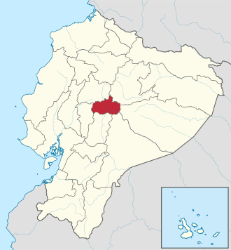

Ambato se encuentra en la región central andina del Ecuador,
en la provincia de Tungurahua, a una altitud aproximada de
2.577 metros sobre el nivel del mar. Está situada en un valle rodeado
de montañas y volcanes, entre ellos el Tungurahua, lo que
le da un paisaje andino único. Se ubica a unos 130 km al sur de Quito,
la capital del país, y forma parte del corredor interandino
que conecta varias ciudades importantes del centro del Ecuador.

| Datos | Información |
|---|---|
| Nombre de la ciudad | Ambato |
| País | Ecuador |
| Provincia | Tungurahua |
| Región natural | Sierra o región Interandina |
| Coordenadas geográficas | Latitud: 1°14′S / Longitud: 78°37′O |
| Altitud | 2.577 metros sobre el nivel del mar |
| Relieve | Valle andino, rodeado de montañas y con cercanía al volcán Tungurahua |
| Clima | Templado andino, con temperaturas entre 14 °C y 17 °C durante el año |
| Ubicación relativa | Centro del país; 130 km al sur de Quito; cerca de Baños, Latacunga y Riobamba |
| Vías de acceso | Carretera Panamericana, terminal terrestre, rutas interprovinciales |
| Zona sísmica | Sí, con antecedentes de actividad volcánica y terremotos (1949) |
| Ríos principales | Río Ambato, afluente del río Pastaza |
| Uso del suelo | Urbano, agrícola, comercial e industrial |
| Tipo de terrenos | Suelo volcánico fértil en zonas rurales; urbano consolidado en el centro |
| Población estimada | Alrededor de 374.000 habitantes (2022) |
| Densidad poblaciona | Aproximadamente 8.300 hab/km² en áreas urbanas |
| Tipo de vivienda | Casas unifamiliares, departamentos, barrios populares y sectores planificados |
| Condiciones de vida | Acceso a servicios básicos en la mayoría del cantón; zonas rurales con menor cobertura |
| Economía local | Industria textil, florícola, metalmecánica, comercio, agroindustria |
| Festividad principal | Fiesta de la Fruta y de las Flores (febrero) |